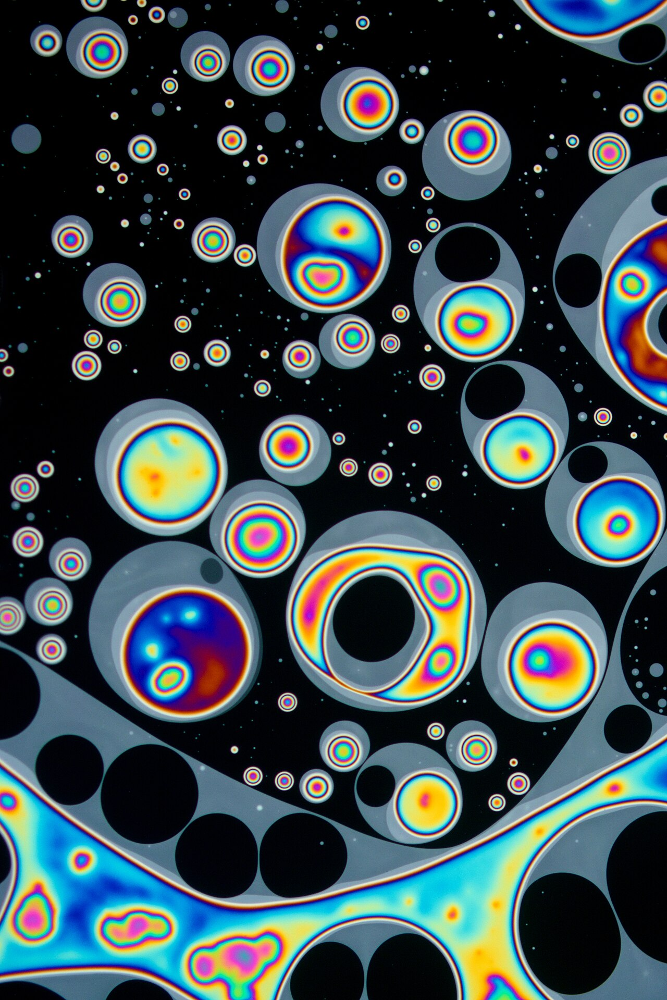

Emulsiones

Emulsiones
Una emulsión es una dispersión de un líquido en otro con el que es inmiscible. Tiene área interfacial y energía en exceso, así que tiende a separarse. El formulador elige emulsionante, proceso y viscosidad para que tarde más que la vida útil del producto.
Objetivos de aprendizaje
- Predecir el tipo de emulsión y comprobarlo con dos métodos.
- Calcular el HLB requerido y la proporción de un par de emulsionantes.
- Distinguir los mecanismos de inestabilidad y su reversibilidad.
- Aplicar los modelos de Stokes y de Krieger y Dougherty dentro de sus límites.
Vocabulario
Hidrófilo
Con afinidad por el agua. La glicerina.
Lipófilo
Con afinidad por el aceite. La cera de abejas.
Viscosidad
Cociente entre el esfuerzo de corte y la velocidad de corte. Se expresa en Pa s. La miel, del orden de 10 Pa s; el agua, 0.001.
Emulsión
Dispersión de un líquido en otro con el que es inmiscible, estabilizada por un emulsionante. La leche: grasa en agua.
O/W
Emulsión con gotas de aceite en una fase continua acuosa. Casi todas las lociones.
W/O
Emulsión con gotas de agua en una fase continua oleosa. Muchas bases de maquillaje.
Emulsionante
Molécula anfifílica que se adsorbe en la interfase y retarda la coalescencia. Tween 80.
HLB
Balance hidrófilo lipófilo: escala empírica de 0 a 20 para emulsionantes no iónicos. Span 80 tiene 4.3 y Tween 80 tiene 15.0.
HLB requerido
HLB de la mezcla de emulsionantes que da la emulsión más estable con un aceite. Almendras, de 6 a 7.
Cremado
Ascenso de las gotas por diferencia de densidad. Es reversible por agitación. Nata de la leche.
Coalescencia
Fusión de dos gotas tras la ruptura de la película entre ellas. Es irreversible. Aceite libre sobre una crema envejecida.
Floculación
Agregación de gotas que conservan su identidad. Es reversible por agitación. Grumos blandos.
Maduración de Ostwald
Crecimiento de las gotas grandes a costa de las pequeñas por difusión de la fase dispersa. Emulsiones con aceites algo solubles.
Cizalla
Deformación en la que capas adyacentes de un fluido se deslizan entre sí. Extender una crema sobre la piel.
Pseudoplástico
Fluido cuya viscosidad disminuye al aumentar la velocidad de corte. Solución de goma xantana.
Esfuerzo de fluencia
Esfuerzo mínimo que inicia el flujo. Pasta dental.
Lección 1. Tipo de emulsión
En una O/W la fase dispersa es el aceite; en una W/O, el agua. La regla de Bancroft establece que la fase continua es aquella donde el emulsionante es más soluble. El volumen de las fases pesa menos: una fórmula con 75 % de agua puede resultar W/O con un emulsionante lipófilo.
| Propiedad | O/W | W/O |
|---|---|---|
| Dilución | admite agua | admite aceite |
| Conductividad | apreciable | casi nula |
| Sensación | ligera | más grasa |
| Ejemplo | loción | base de maquillaje |
Lección 2. Balance hidrófilo lipófilo
Griffin definió la escala por comparación experimental de mezclas (Griffin 1949) y después la calculó para no iónicos (Griffin 1954). Para ésteres de polioles y para etoxilados:
\[HLB = 20\left(1 - \frac{S}{A}\right) \qquad HLB = \frac{E}{5}\]
con \(S\) el índice de saponificación del éster, \(A\) el índice de acidez del ácido graso y \(E\) el porcentaje en masa de óxido de etileno. Las expresiones no valen para iónicos ni para moléculas con óxido de propileno.
| HLB | Aplicación |
|---|---|
| 1 a 3 | antiespumante |
| 4 a 6 | emulsionante W/O |
| 7 a 9 | humectante de superficies |
| 8 a 18 | emulsionante O/W |
| 13 a 15 | detergente |
| 10 a 18 | solubilizante |
El HLB requerido de una fase oleosa y la fracción de un par salen de balances lineales:
\[HLB_{req} = \frac{\sum w_i\, HLB_i}{\sum w_i} \qquad x_A = \frac{HLB_{req} - HLB_B}{HLB_A - HLB_B}\]
Ejemplo resuelto. 12 partes de almendras (6 a 7) y 4 de karité (8): de (12 × 6 + 4 × 8)/16 = 6.5 a (12 × 7 + 4 × 8)/16 = 7.25. Con Span 80 (4.3) y Tween 80 (15.0), para 6.875: x = (6.875 − 15.0)/(4.3 − 15.0) = 0.759 de Span 80.
Límites. Griffin estimó una precisión de ±1. Salager señala ±2 en la práctica y que la escala ignora temperatura, electrolitos y tipo de aceite; propone la desviación hidrófilo lipófila normalizada, HLDN (Salager et al. 2020). Las tablas difieren: la vaselina figura con 10.5 en Griffin y con 7 a 8 en compilaciones posteriores. El HLB de aceites vegetales cambia con origen y proceso (Smejkal et al. 2024). Alam y colaboradores hallaron inestables las fórmulas cuyo par se alejaba de 10.5 a 12 (Alam et al. 2020).
La calculadora trabaja con intervalos. Laboratorio virtual: balanza de emulsionantes.
Lección 3. Mecanismos de inestabilidad
Emulsión estable: gotas dispersas que se cruzan sin unirse.
Cremado. Las gotas ascienden por diferencia de densidad, las mayores primero. Reversible por agitación.
Floculación. Se agregan sin fundirse. Reversible por agitación.
Coalescencia. La película se rompe y dos gotas forman una. Irreversible.
Maduración de Ostwald. El aceite difunde de las gotas pequeñas a las grandes por diferencia de presión capilar.
Inversión. La fase dispersa pasa a continua.
| Mecanismo | Fuerza impulsora | Reversible | Medida |
|---|---|---|---|
| Cremado o sedimentación | gravedad | sí | altura de crema con el tiempo |
| Floculación | atracción entre gotas | sí | microscopía, reología |
| Coalescencia | ruptura de película | no | distribución de tamaño |
| Maduración de Ostwald | presión de Laplace | no | radio al cubo contra tiempo |
| Inversión | cambio de afinidad | no | conductividad |
La velocidad de cremado de una gota aislada sigue a Stokes:
\[v = \frac{2\,r^2\,(\rho_c - \rho_d)\,g}{9\,\eta_c}\]
Es válida para gotas rígidas, diluidas y en medio newtoniano. Una crema con esfuerzo de fluencia puede no cremar aunque la ecuación dé una velocidad. Calculadora de Stokes.
Lección 4. Viscosidad y fracción dispersa
Con 20 % de gotas, cada una encuentra espacio para pasar.
Con 45 % se estorban y el mismo esfuerzo produce menos flujo.
Cerca del empaque máximo la viscosidad diverge (Krieger y Dougherty 1959):
\[\frac{\eta}{\eta_0} = \left(1 - \frac{\phi}{\phi_m}\right)^{-[\eta]\,\phi_m}, \qquad [\eta] = 2.5\]
El modelo describe esferas rígidas. Una gota líquida se deforma y ofrece menos resistencia.
Lección 5. Proceso
- Calentar ambas fases por separado a la misma temperatura, unos 5 °C sobre el punto de fusión más alto.
- Incorporar la fase interna sobre la externa con cizalla intensa.
- Homogeneizar de 2 a 5 min y registrar velocidad y tiempo.
- Enfriar con agitación suave. Sin agitación, las ceras cristalizan en granos grandes.
- Agregar la fase C por debajo de 40 °C.
- Reponer el agua evaporada por diferencia de masa.
El proceso en frío ahorra energía y no sirve con ceras.
Lección 6. Verificación del tipo
| Ensayo | O/W | W/O |
|---|---|---|
| Colorante hidrosoluble al microscopio | fondo coloreado | gotas coloreadas |
| Dilución con agua | se dispersa | forma grumos |
| Conductividad | del orden de la fase acuosa | casi cero |
Dos ensayos concordantes bastan. Se registra además el tamaño de gota: promedio de 200 gotas medidas en micrografía con escala.
Alcance de la evidencia
El HLB sirve para elegir los primeros ensayos. La estabilidad se determina con el plan de estabilidad.
Autoevaluación
Referencias
La clasificación y los ensayos de tipo siguen a Baki (2023, 52-53, 69-72, 213-15 y 260).